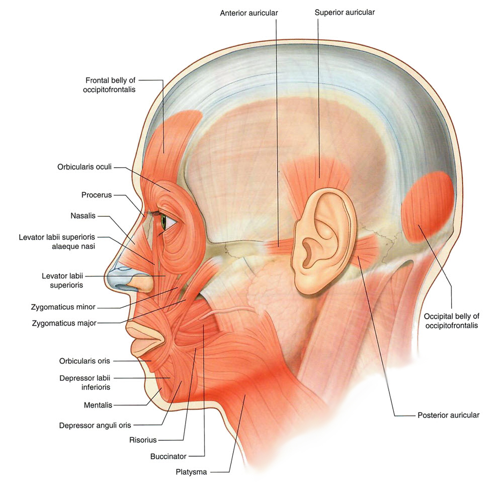

Neurology 5 - Face - Muscles: Page 7 of 7
×

|  |
| Tap on image to enlarge |
The scalp is composed of one muscle that has two bellies and is mostly conective tissue.
What cranial nerve innervates all of the facial muscles? |
|
|
The facial nerve CN VII. |
|